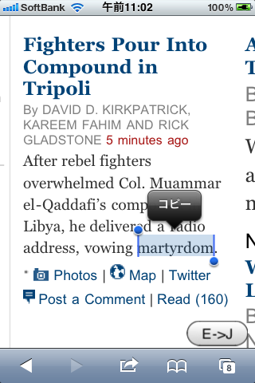

Twitter連携機能付き辞書ブックマークレット
iPadに超お勧めの辞書ブックマークレットのご紹介です。
iPadやiPhone、Androidケータイで英語のウェブサイトを見るとき、辞書が連携してくれなくて辛くありませんか？。
辞書用ブックマークレットはたくさんありますが、みんな、辞書サイトを別のページで開くか、別の辞書アプリを開きます。単語の文脈が見えなくなりますし、読んでいたサイトに戻るのも面倒です。
別のアプローチでは、POPjisyoやずるっこなど素晴らしいサービスがありますが、モバイル端末用ブラウザに合わせたページは提供されておらず、現状では表示されなかったりレイアウトが乱れたりして活用が難しいです。
そこで、単語の意味をポップアップウィンドウで表示するブックマークレットを作成しました。
iPadの場合

iPhoneの場合

こんな機能のブックマークレットです
ブックマークバーありの場合
- 単語を選択しブックマークレットをタップすると、ポップアップウィンドウで単語の意味を表示します。
- 選択せずにブックマークレットをタップすると、ポップアップウィンドウで調べたい単語が入力できます。
ブックマークバーなしの場合
- 辞書を使いたいウェブページでブックマークレットをタップして少しスクロールしてください。上記画面のようにページの右下に"J->E"ボタンが現れます。
- 単語を選択し"J->E"ボタンをタップすると、ポップアップウィンドウで単語の意味を表示します。タップはゆっくりするのが使い方のコツです。
- 選択せずに"J->E"ボタンをタップすると、ポップアップウィンドウで調べたい単語が入力できます。
共通
- Twitter連携機能があります。調べた単語と意味を、1時間後、1日後、1週間後、1ヶ月後にTwitterで知らせます。繰り返し思い出して自然に覚えましょう。
インストールの仕方
1. 下の欄にあなたのTwitter IDを入力してください。Twitter連携に興味がなければ空欄のままで結構です。
URL生成ボタンをタップすると、ページが変わりますのでそのページでインストールを続けてください。
こんな風にも使えます
英単語は勉強したいけど、そもそも英語のウェブサイトを読むことがない？
Twitterで@repeat_botをフォローしてください。
あなたがフォローしている人たちが調べた単語をTLに入れることができます。
謝辞
バックエンドはHerokuのフリーアカウントを利用させていただいています。
また、辞書データには根岸英語塾PrepTuTorEJDICを利用させていただいています。ありがとうございます。
連絡先
ご意見、ご要望はichikawa.yuji at gmail.comまで是非お願いします。
Copyright (C) 2011 ICHIKAWA, Yuji All rights reserved.